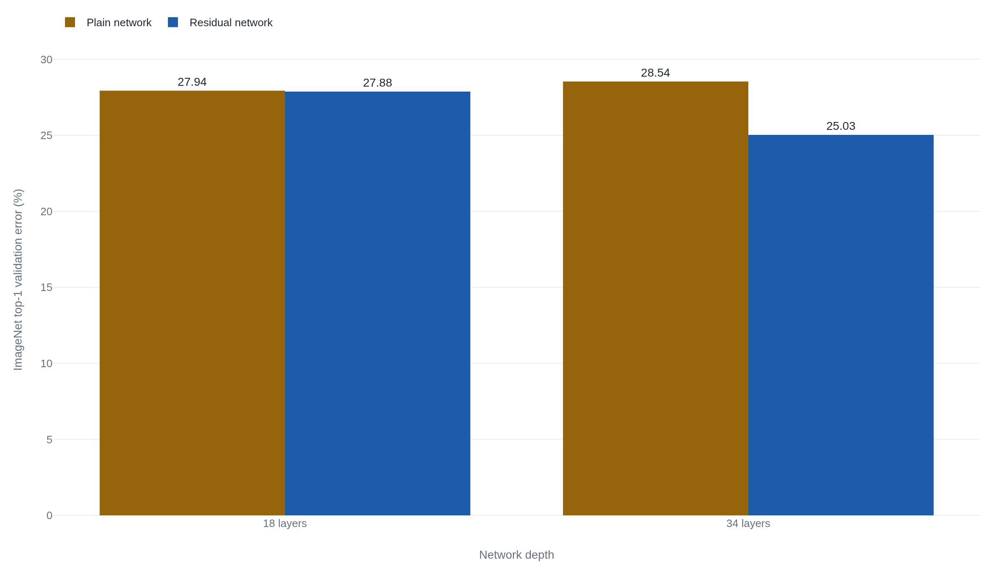

The deeper network fit its training data worse
Microsoft's ResNet swept the 2015 vision contests by adding each layer's input back to its output, the skip connection now wired into every transformer.
Why this matters
You have heard that neural networks got deeper, and that depth is what made them work. This lesson reads the paper that made depth trainable, and finds the story is not the one the headline tells. The paper's own opening result is that a deeper network, given more layers than it needed, fit its training data worse than a shallower one. The fix for that failure is a single wiring change so small it adds no new parameters, and it turned out to matter far beyond the images it was built for. By the end you will be able to say what problem the paper actually solved, why adding layers made a network harder to train rather than easier, and why the same fix now sits inside every large language model.
- 01
- AlexNet won ImageNet 2012 on two gaming GPUs: the contest ResNet later swept, and the turn toward depth and compute that set it up.
- 02
- An attention head is a weighted average that computes its own weights: the transformer sub-layer whose output the skip connection now wraps.
The result beneath the depth headline
In December 2015, four researchers at Microsoft Research posted "Deep Residual Learning for Image Recognition."1 Their networks took first place on all five tracks of that year's ImageNet and COCO competitions: classification, detection, and localization on ImageNet, and detection and segmentation on COCO.1 The paper has since been cited hundreds of thousands of times, which places it among the most-cited scientific works in any field.2
The win is remembered as a win for depth. The headline network was 152 layers, eight times deeper than the best network from the year before. But the paper opens on a result that points the other way, and the change it is famous for was an answer to that result, not to depth for its own sake. Take a network that already works and add more layers, and it should not get worse. It did.1
Adding layers that do nothing raises the error
Start with a network that works: a 20-layer stack that turns an image into a guess about what it shows. Now build a deeper version of the same network with 56 layers. Copy the first 20 layers across exactly. For each of the 36 new layers, you get to choose what it does, so choose the simplest thing: make it pass its input straight through, unchanged. A layer that copies its input to its output is doing nothing, and 36 layers each doing nothing, stacked on the working 20-layer network, compute exactly what that network computed. The 56-layer network can, on paper, match the 20-layer one. It contains the shallower network as a special case, plus room to do better.
Now train it from scratch and watch what happens. The 56-layer network does worse. Not on the test set, the fresh images held back to check whether it generalizes, where you might blame it for memorizing the training pictures. It does worse on the training set itself, the very images it is being fit to. The deeper plain network sits above the shallower one on the training-error curve and stays there.1
That is strange, because the good solution provably exists. You just constructed it: keep the first 20 layers, set the other 36 to copy their input. Training never finds it. The paper names this the degradation problem, and its point is precise. The deeper network is not failing to generalize from what it learned; it is failing to learn in the first place. Gradient descent, the procedure that nudges each weight to lower the error, cannot reach a solution that is sitting right there in the network's reach.
Let each block start from doing nothing
The construction you just did points straight at the fix. The trouble was that a stack of layers could not learn to copy its input, even though copying is the easiest thing a layer could be asked to do. So change what the layers are asked to produce. Instead of a block that computes its output from scratch, wire the block's input around it on a second path and add it back to whatever the block produces.1 That second path is the skip connection, and it carries the input across unchanged, adding no weights of its own.
- F(x)the change the block learns on top of its input, driven toward zero when the block should do nothing
- xthe skip connection: the block's input, carried across unchanged and added back to the output
Read what this does to the copying problem. For the block to do nothing, its output must equal its input, so the change it computes must be zero. Driving a stack of weights toward zero is exactly the state gradient descent settles into when a layer has nothing useful to add. The identity solution the construction promised is no longer a needle the optimizer has to find; it is the resting position the optimizer falls into. Each block now starts from doing nothing and learns only the adjustment it can justify.
The evidence is in the reversal. On ImageNet, a 34-layer plain network scored worse than an 18-layer plain network: more layers, higher error. Add the skip connections and the direction flips, the 34-layer residual network beating the 18-layer one by a clear margin.1 The two residual networks carry no extra parameters over their plain twins. The only difference is the wire that adds the input back.

Deep enough to win, deep enough to overfit
With the skip connection in place, depth became usable. The authors trained residual networks of 50, 101, and 152 layers. The 152-layer network reached 4.49% top-5 error on ImageNet as a single model, at 11.3 billion multiply-add operations per image, below the 19.6 billion of the shallower VGG-19 it displaced.1 Eight times the layers at a little over half the arithmetic. An ensemble of these networks reached 3.57% top-5 error on the ImageNet test set and took first place.1
Depth was not a free lever, and the paper is honest about the limit. On CIFAR-10, a much smaller dataset, the authors pushed a residual network to 1202 layers. It trained without difficulty, its training error under 0.1%, no sign of the degradation problem at all. It still scored worse on the test set than a 110-layer network, 7.93% against 6.43%.1 The skip connection had removed the optimization wall; it had done nothing about overfitting, and a network with far more capacity than a small dataset can pin down goes back to memorizing. Making a network trainable and making it better are two different wins, and only the first is the skip connection's.
Later work sharpened both the design and the explanation. The same authors soon showed that keeping the skip path a clean copy and reordering the block trains a 1001-layer network to 4.62% on CIFAR-10, so the 2015 block was not the last word.3 Others found that a deep residual network behaves like an ensemble of many shorter paths, with most of the training signal flowing through the short ones rather than the full depth.4 Another group showed that the skip connection smooths the loss surface the optimizer descends, keeping it a navigable bowl instead of a jagged mess as layers pile up.5 None of this unseats the original result. It explains why the wire works.
From a vision fix to every transformer
The result is often retold as ResNet solving the vanishing gradient problem: the old difficulty where the training signal shrinks toward zero as it passes back through many layers, until the earliest layers barely learn. It is a reasonable belief to hold. Very deep networks were hard to train, vanishing gradients were the known reason, and here is a paper that made very deep networks train. But the paper checks for exactly this and rules it out for its own setting. Its plain networks already used batch normalization, a standard step that keeps the forward and backward signals at healthy sizes, and the authors confirm the signals stayed healthy.
"We argue that this optimization difficulty is unlikely to be caused by vanishing gradients... So neither forward nor backward signals vanish."1 He, Zhang, Ren & Sun, Section 4.1
The degradation was a failure of optimization, not a signal fading away, and the skip connection helps by changing what the layers must learn. The paper did look past vision once. Its introduction predicts that the residual principle "is generic, and we expect that it is applicable in other vision and non-vision problems."1 That was a forecast, not a demonstration. It named no architecture, and the transformer, the design behind today's language models, did not yet exist.
The forecast landed in a place the authors could not have named. Two years later, "Attention Is All You Need" wrapped a skip connection around every attention and feed-forward sub-layer of the transformer, adding each sub-layer's input back to its output before normalizing, the step the paper labels "Add & Norm," and citing this paper by name for it.6 The transformer does not treat the skip connection as optional; it wraps one around every block, the same move He and colleagues made in 2015. The trick built to make a vision network deep is now a working piece of the models that write text. Its lasting legacy is not 152 layers of anything. It is a way to build depth that later architectures reuse without a second thought.
The takeaway
The problem ResNet solved was not that networks could not be deep. It was that beyond a point, a deeper plain network fit its own training data worse, because gradient descent could not teach a stack of layers to leave its input alone. The residual block fixes that by wiring the input around each block and adding it back, so doing nothing becomes the easy default and each block only has to learn a change. That one wire, which adds no parameters, is what made networks of a hundred layers and more trainable, and it is why the paper's real influence runs through a training trick rather than through depth. The same skip connection sits inside every transformer today, added around each sub-layer before the network normalizes. When you next read that models got better by getting deeper, remember that depth alone made them worse first, and that a network fitting its training data is a separate thing from a network doing well on data it has never seen.
- 01
- Identity Mappings in Deep Residual Networks (He et al., 2016): the same authors' cleaner block, trained to 1001 layers.
- 02
- Visualizing the Loss Landscape of Neural Nets (Li et al., 2018): the picture of what a skip connection does to the surface the optimizer descends.
Sources
- arXiv · He, Zhang, Ren & Sun, "Deep Residual Learning for Image Recognition" (2015)
- Semantic Scholar · Citation record for arXiv:1512.03385
- arXiv · He, Zhang, Ren & Sun, "Identity Mappings in Deep Residual Networks" (2016)
- arXiv · Veit, Wilber & Belongie, "Residual Networks Behave Like Ensembles of Relatively Shallow Networks" (2016)
- arXiv · Li, Xu, Taylor, Studer & Goldstein, "Visualizing the Loss Landscape of Neural Nets" (2018)
- arXiv · Vaswani et al., "Attention Is All You Need" (2017)